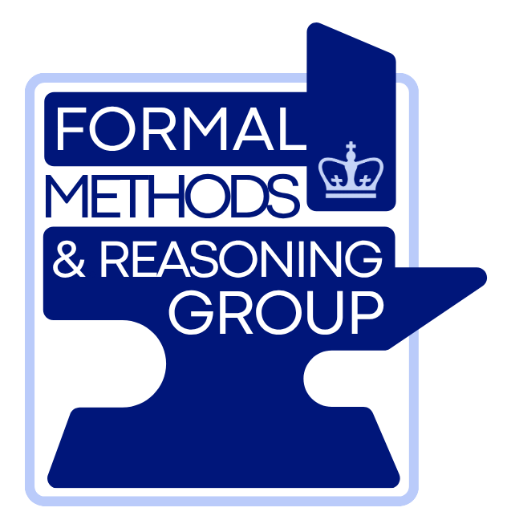
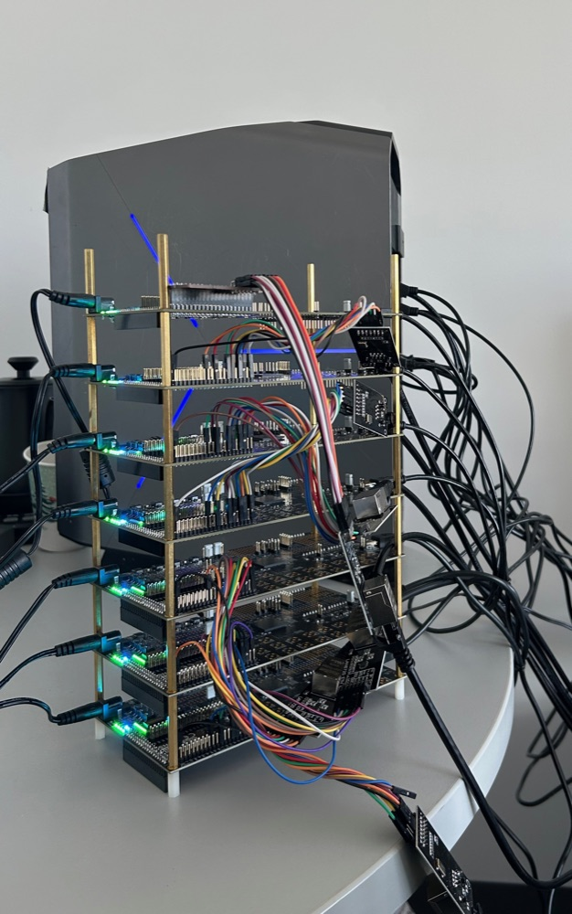
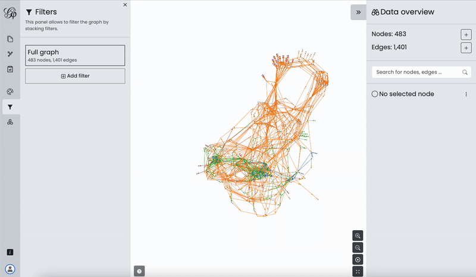
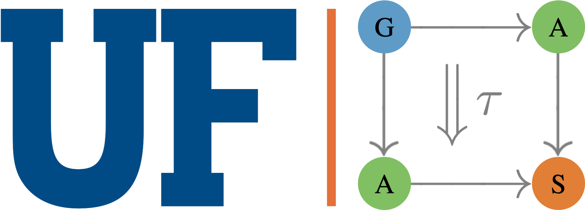
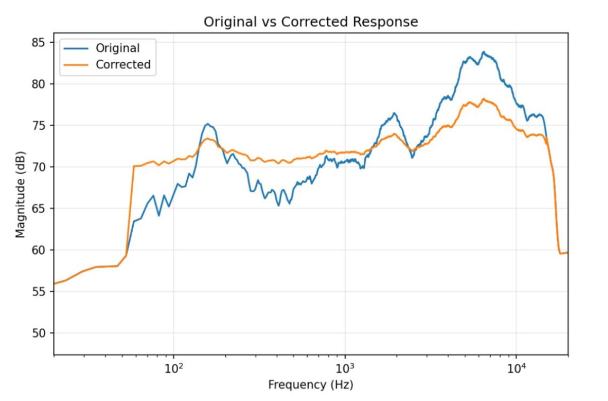

I am currently working with Manuel Hidalgo Sola to develop a new kind of SAT Competition focused on hardware accelerated SAT solvers. SAT solvers remain a difficult challenge for hardware acceleration due to their sequential dependencies and memory-bound nature. We believe coding agents coupled with our Manhattan Reasoning FPGA framework can open new opportunities for research within the area. We aim to open the competition to the public in 2027.

Do you like FPGAs? Ever wish you could throw your favorite coding agent at one without having to buy a physical FPGA or wait for AWS to give you access to F2? Manhattan Reasoning aims to be the Modal of FPGAs. Remotely program FPGAs in Python like a cloud function. We currently only support 7 Lattice ECP5s locally in our lab. We are working to expand to AWS F2 as a backend. Try the beta!

Want to translate your program into a knowledge graph? Wyvern Graph can translate LLVM IR into a knowledge graph, conveying syntax, memory, data, and control flow.

I spent my senior year of undergrad contributing to the AlgebraicJulia software ecosystem, an open-source collection of Julia packages for applied category theory and scientific computing.
An Amaranth HDL reimplementation of the SAT-Accel CDCL SAT solver (Lo, Chang & Cong, FPGA '25) for the Lattice ECP5, running on Manhattan Reasoning cloud FPGAs. On the SATLIB benchmarks from the SAT-Accel paper, it solves every instance that fits on-chip and averages 122× faster than the SAT-Hard FPGA solver (Ustaoglu et al., DSD '19). It also adds optional solver heuristics from MiniSat, Glucose and Kissat.
A semester of research with Prof. Stephen A. Edwards on the equivalence checker in MACCHIATO, a compiler tool-chain for the DARPA MOCHA program that uses language models to rewrite code for hardware accelerators. I explored different approaches to establishing that C++ programs and their LLM-optimized CUDA rewrites are equivalent. Read the report.

A room equalization device built on the DE1-SoC with Jacob Boxerman and Roland List. The FPGA plays a logarithmic sine sweep through the speakers and records the room's response through a microphone. The ARM CPU runs an FFT on that recording and computes correction coefficients. A real-time FIR filter bank on the FPGA then applies them to all incoming audio, compensating for the room's acoustics. Read the report.
A cop agent synthesized from a TSL Modulo Theories specification that is guaranteed to catch the robber on a 7×7 grid. The chase strategy is entirely synthesized from the temporal specification.